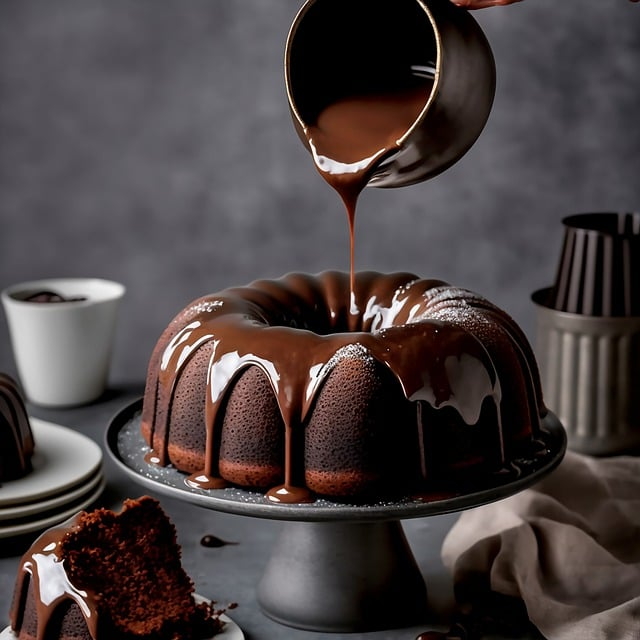
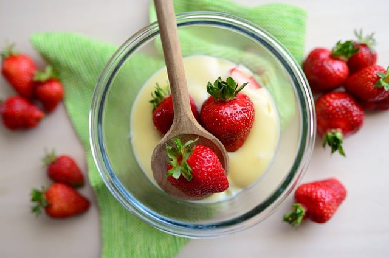
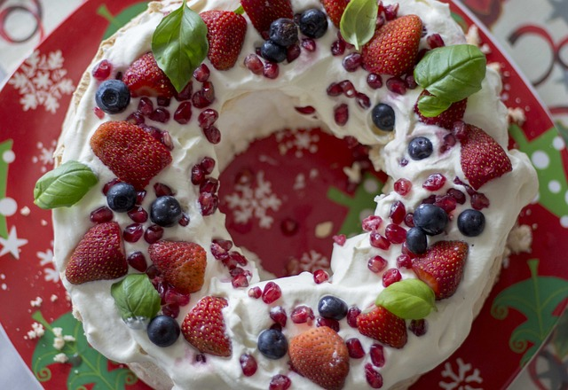
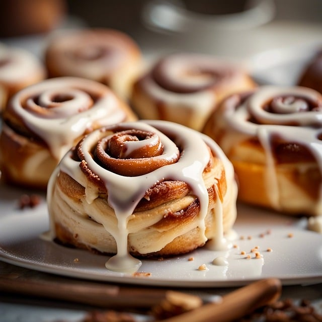

Joulureseptejä
Selaa reseptejä tästä:

Joulusuklaakakku
| Ainesosa | Määrä |
|---|---|
| tummaa suklaata | 200 g |
| voita | 100 g |
| sokeria | 2 dl |
| kananmuna | 4 kpl |
| vehnäjauhoja | 1 dl |
| suolaa | ripaus |
Valmistus
- Sulata suklaa ja voi yhdessä kattilassa miedolla lämmöllä.
- Sekoita sokeri suklaaseokseen ja anna jäähtyä hieman.
- Lisää munat yksi kerrallaan ja sekoita hyvin.
- Lisää jauhot, vaniljasokeri ja suola. Sekoita tasaiseksi.
- Kaada taikina voideltuun vuokaan ja paista 180 °C noin 25-30 minuuttia. Anna jäähtyä ennen tarjoilua.

Kardemummalla maustettu riisivanukas
| Ainesosa | Määrä |
|---|---|
| riisiä | 1 dl |
| maitoa | 5 dl |
| kermaa | 1 dl |
| sokeria | 0,5 dl |
| kardemummaa | 1 tl |
| vaniljasokeria | 1 tl |
| Marjoja (esim. puolukoita tai mustikoita) koristeeksi | - |
Valmistus
- Huuhtele riisi kylmässä vedessä. Keitä riisi maidossa miedolla lämmöllä, kunnes se on pehmeää (noin 20-25 minuuttia)
- Tarjoile riisivanukas marjojen kanssa.
- Lisää jauhot, vaniljasokeri ja suola. Sekoita tasaiseksi.

Jouluiset pavlova-kakut
| Ainesosa | Määrä |
|---|---|
| valkuainen | 4 kpl |
| sokeria | 2 dl |
| maissitärkkelys | 1 tl |
| valkoviinietikka | 1 tl |
| vispikerma | 2 dl |
| vaniljasokeria | 1 tl |
| Marjoja ja hedelmiä (esim. karpaloita, kiiviä ja granaattiomenan siemeniä) koristeeksi | - |
Valmistus
- Kuumenna uuni 120 °C. Voitele leivinpaperi ja aseta se uunipellille.
- Vatkaa valkuaiset kovaksi vaahdoksi, lisää sokeri vähitellen, kunnes seos on kiiltävää ja kovaa.
- Lisää maissitärkkelys ja valkoviinietikka, sekoita varovasti.
- Lusikoi seosta muotoon haluamasi kokoisiksi kakuiksi leivinpaperille ja paista noin 1 tunti.
- Anna kakkujen jäähtyä ja täytä ne vispatulla kermalla ja marjoilla ennen tarjoilua.

Jouluiset kanelipullat
| Ainesosa | Määrä |
|---|---|
| kuivahiiva | 1 pkt / 11 g |
| maitoa | 2 dl |
| sokeri | 0,5 dl |
| kardemumma | 1 tl |
| kaneli | 1 tl |
| suola | 0,5 tl |
| vehnäjauhoja | 7 dl |
| voita sulatettuna | 100 g |
| kananmuna voiteluun | 1 kpl |
Valmistus
- Lämmitä maito 37 °C. Lisää hiiva ja sokeri. Anna seoksen levätä noin 10 minuuttia.
- Lisää kardemumma, kaneli, suola, sulatettu voi ja jauhot. Vaivaa taikina tasaiseksi.
- Anna taikinan kohota liinan alla noin 1 tunti.
- Kauli taikina levyksi ja levitä päälle kaneli-sokeriseos. Kääri taikina rullaksi ja leikkaa viipaleiksi.
- Aseta viipaleet leivinpaperille, voitele kananmuna ja paista 225 °C noin 10-15 minuuttia.

Minttusuklaa-mousse
| Ainesosa | Määrä |
|---|---|
| tummaa suklaata | 200 g |
| vispikermaa | 3 dl |
| sokeria | 0,5 dl |
| kpiparminttuöljyä tai -aromia | 1 tl |
| suolaa | ripaus |
| suklaarouhetta koristeluun | - |
| mintunlehtiä koristeluun | - |
Valmistus
- Sulata suklaa miedolla lämmöllä ja anna jäähtyä.
- Vatkaa kerma ja sokeri vaahdoksi.
- Lisää jäähtynyt suklaa ja piparminttuöljy kermavaahdon joukkoon varovasti sekoittaen.
- Annostele mousse tarjoiluastioihin ja laita jääkaappiin vähintään 1-2 tunniksi.
- Koristele suklaarouheella ja tuoreilla mintunlehdillä ennen tarjoilua.